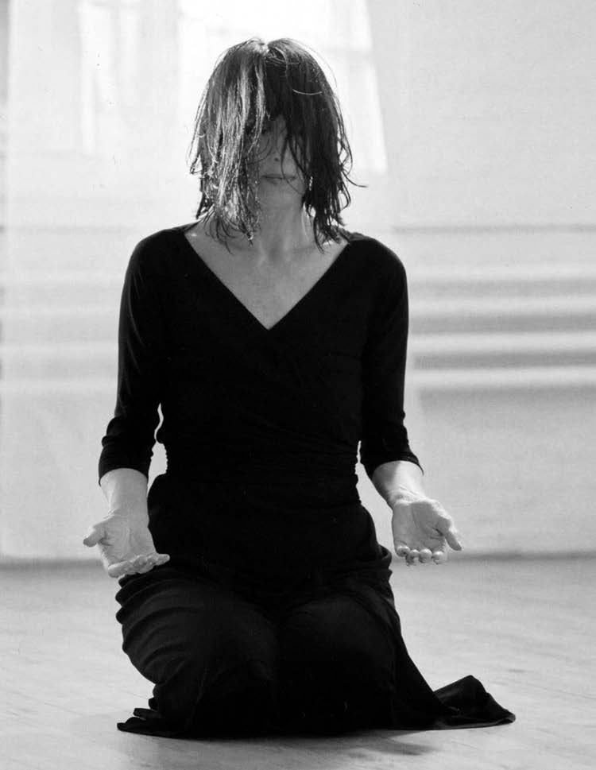

Gabrielle Roth began her exploration of trance dance in the mid-1960s and has devoted her life to honoring and communicating the language of primal movement through her 5Rhythms™. Her workshops connect the currents of world music, poetry, and theater with the ancient pulse of shamanism. She is author of Maps to Ecstasy, Sweat Your Prayers, and Connections and has a number of musical recordings available on the Raven label.
Jeanne Schul-Elkins: For more than thirty-five years, your work has been entitled “ecstatic dance.” You have described the five universal rhythms —flowing, staccato, chaos, lyrical and stillness—as a way to “sweat your prayers.” Could you help us understand how these movements offer a “gateway” to the soul?
Gabrielle Roth: Each of us is a moving center, a space of divine mystery. And although we spend most of our time on the surface dealing with the daily details of ordinary existence, we hunger to connect to this space within us. We yearn to break through to ecstatic states of consciousness, to be swept away by the beloved, and this longing is organic to who we are.
As a young dancer, I made the transition from the world of steps and structures to the world of transformation and trance by exposure to live drumming. It was the sixties on the wild coast of Big Sur, and sometimes these drum sessions would go on into the wee hours of the night. The beats, the patterns, the rhythms kept calling me deeper and deeper into the trance. These dances took me from the edge of myself to the moving center; as I went on this journey again and again, I recognized that the same movement patterns carried me to this blissful place.
In a parallel universe, I was teaching movement to thousands of people and began to observe that these patterns emerged on all dance floors, in all bodies. And so I named them and began a life long apprenticeship to the “5Rhythms!” Being young and wild and free, it didn’t dawn on me that in order to go into these deep, ecstatic places, I would have to be willing to transform absolutely everything that got in my way. That included every form of inertia known to man; from the physical inertia of tight and stressful muscles, to the emotional baggage of depressed, repressed feelings, the mental baggage of outmoded/ outdated dogmas and attitudes, philosophies. In other words, I’d have to let it all go. I’d have to let everything go. And, anyone who wanted to go on this journey would have to do the same.
Thus, a body of work was born in the sixties that is at least seventy-five thousand years old, and is now maturing into a contemporary Zen shamanic practice that has planted its roots and spread its wings into communities all over the world. The concept of soul has been abstracted by religion. But for me, it is a visceral reality. It is when the body, the heart and the mind are completely hooked up into a unique expression of the unified field. In other words, it’s when our style kicks in, and we truly become who we are with our own voice, our own dance, our own fashion, all the accessories to our fabulous fingerprints.
The “5Rhythms!” catalyze and speed up this process. In fact, they make becoming who you are a totally irresistible process.
Jeanne: Early in your career, you worked with Fritz Perls at Esalen. How did he influence the direction of your work?
Gabrielle: Fritz Perls was a genius and a friend. He uprooted therapy from the past and planted it in the present; he turned it upside-down, taking it out of the head and putting it into the body. He loved dancers, and when he found out that I had put myself through school by teaching dance to kids on playgrounds, old folks in senior citizens homes, schizophrenics in mental wards, junkies in halfway houses, he was ecstatic. He invited me to teach movement to all of his gestalt therapy groups at Esalen. Thereby, he created the first lab in which I would begin my archeological dig into human nature.
Jeanne: Gestalt Therapy, which Fritz Perls created, has a very specific approach to dreamwork. What is your experience with dreamwork?
Gabrielle: Writing my dreams down turns me on. It’s a deep and intimate way to get to know myself. Dreams fascinate me, they’re very theatrical, and I treat them as such in my work. I love to stage them as ritual theater pieces. There is something about making them visual and visceral that allows us to go beyond them and take the next step, to make choices, to move beyond the dream. We can use the dream as a diving board into a sea of possibilities as artists, as healers, as lovers.
Jeanne: You are often quoted as saying, “the body never lies.” Would you talk to us about what that means within the context of your dance?
Gabrielle: It’s not that the body never lies, it’s that the body can’t lie. We’ve all had conversations with someone who is telling us how good they’re feeling, and yet we pick up an entirely different message. Perhaps we feel the weight of their sorrow or the edge of their anger coloring their words, shaping their body. What we’re seeing is not what we’re hearing, or what we’re hearing is not what we’re seeing, or some combination of both. The truth is what we carry in our bodies. The deceit is what we struggle with in our heads.
At the root of my work, we are learning to listen to the body, to truly get to know who we are in the most direct, intimate way. Through movement we become familiar with the messages, stories that we carry in our shoulders, in our hips, between our legs, and under our arms. The body is the gateway to the entire psyche. Through the body we enter into the landscape of our inner world, which includes our feelings, our thoughts, our dreams and our realities.
Jeanne: You emphasize connecting with imagination and intuition in your approach to dance. Does stepping into this realm of non-linear, symbolic thought process help bring about “Trance-Dance?”
Gabrielle: No. Trance-dance is the gateway to an intuitive, imaginative, inspired way of being. In the “5Rhythms!” practice, we’re stretching the mind as well as the body, and exercising it as a muscle so that we are stepping out of our old, tired patterns, into our own style of moving, Our ego lives in a state of unconsciousness and self-consciousness.
But our soul lives, moves, and breathes in an intuitive, imaginative, inspired zone. When we dance, we shift our attention from the chattering monkey-mind to this soulful dimension. We can do the dance of the dolphin, or the dance of a stone or a spider. Through the dance, we can connect to the spirit in all things.
Jeanne: What do you mean by “Trance-Dance?” Could you help us understand what it looks like?
Gabrielle: Trance is a tricky place, a place not many understand. It’s a mindful state that only happens when you get out of your way and fall into your true self so deeply that something inside clicks and you are simultaneously being and witnessing yourself. It’s not true that trance is a spell that someone else puts you under. Trance is hypnotic but it’s not hypnosis. Nobody can put you in a trance but God, and God makes you beg for it. It takes a lot of preparation to let go of being the mover and allow yourself to be moved.
It looks holy.